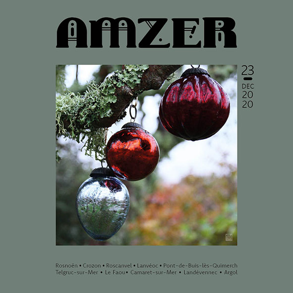

Ce site est en cours de construction. En attendant...
Découvrez Amzer n°23 - Décembre 2020

Pour lire la version numérique, c'est par
là
Édito - Daou
Deux bougies. Un an de plus. Douze mois étranges, en alternance. Une année en demi-teintes, au rythme du temps qui se
fige, recule, accélère, ralenti, s’arrête à nouveau et tourbillonne sans cesse...
Pourtant, malgré ce sentiment d’être désorienté et de parfois se sentir perdre pied, ne garder que le beau, le doux et
le sucré, les espoirs, les ciels étoilés et la lune d’opale, les matins paresseux, les instants de folie, l’odeur de la
pluie juste avant qu’elle ne tombe, la brume qui racontent un autre paysage, la bruine qui caresse la peau et réveille
les sens, l’intensité du crépuscule quand le soleil se mêle à l’océan, les rencontres, les sourires qui brillent jusque
dans le regard. Et surtout, ne jamais oublier le goût de la liberté...
P.S. :
Ce numéro n’étant que numérique
Nous avons décidé au sein de l’équipe
D’attendre la prochaine
version
papier
Pour le grand jeu et ses cadeaux à gagner
Espérons que cela soit pour janvier
Et qu’en « Jeu
de début
d’année » il soit rebaptisé !